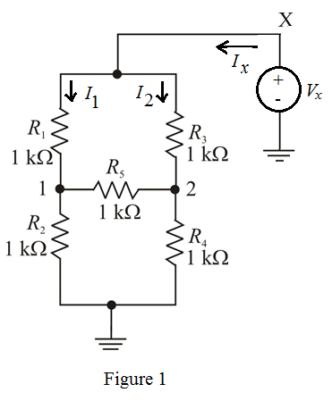
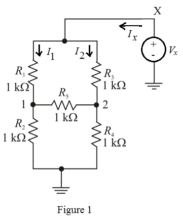
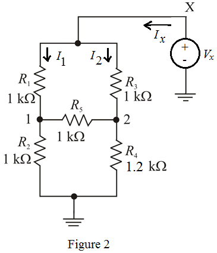

Refer to Figure P1.18 in the textbook.
Apply a voltage source  across terminals X and ground as shown in Figure 1.
across terminals X and ground as shown in Figure 1.

Refer to Figure P1.18 in the textbook.
Apply a voltage source across terminals X and ground as shown in Figure 1.

Apply Kirchhoff’s current law at node 1.
…… (1)
Apply Kirchhoff’s current law at node 2.
...... (2)
Substitute for  in equation (1).
in equation (1).
…… (3)
Substitute for in equation (2).
From equation (3),
Apply Kirchhoff’s current law at node X.
…… (4)
Substitute for  and for .
and for .
Calculate the equivalent resistance.
Therefore, the equivalent resistance, is  .
.
Apply a voltage source across terminals X and ground as shown in Figure 2.

Apply Kirchhoff’s current law at node 1.
…… (5)
Apply Kirchhoff’s current law at node 2.
…… (6)
Substitute for in equation (6).
 …… (7)
…… (7)
Substitute for  in equation (5).
in equation (5).
From equation (7),
Apply Kirchhoff’s current law at node X.
…… (8)
Substitute for and for  .
.
Calculate the equivalent resistance.
Therefore, the equivalent resistance, is .